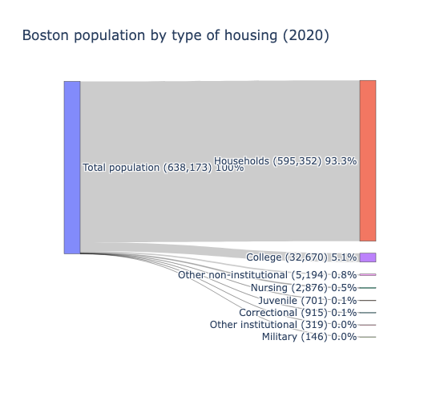
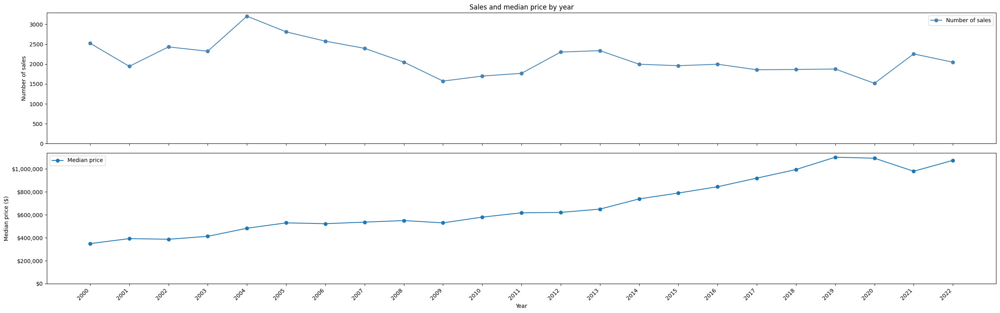
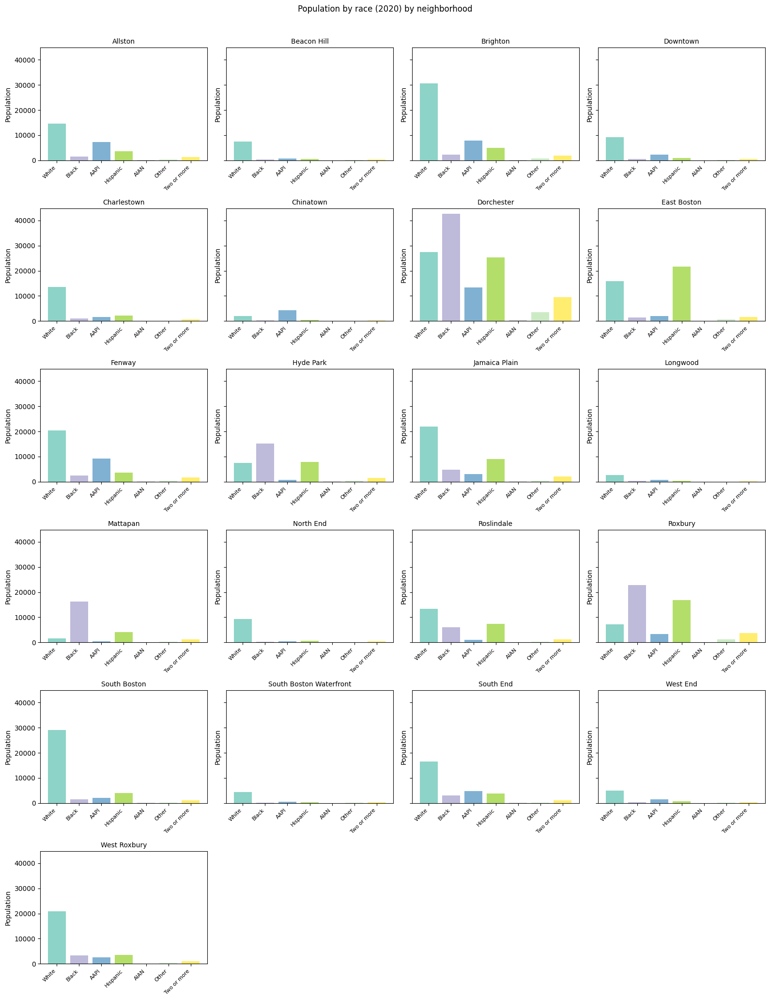
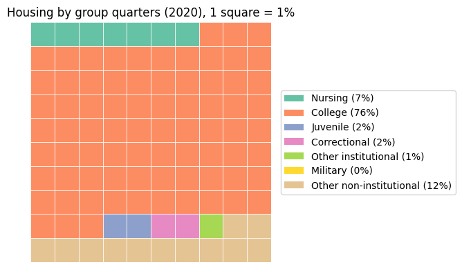
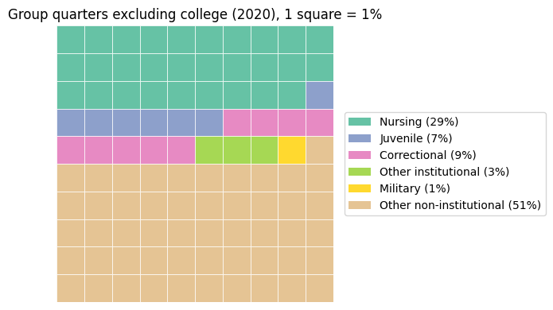
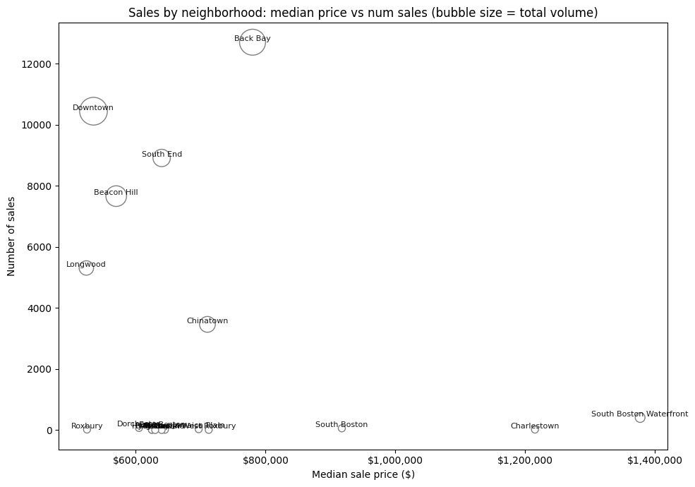

A2: Exploratory Visual Analysis
Subtheme: Corporate Landlords & Evictions
Questions and motivations
I have to admit, the questions I started out with weren’t possible to answer because the data available wouldn’t help answer them. I started out with the following questions:
- Q1: Do corporate landlords file for evictions more than non-corporate landlords?
- Q2: What proportion of renters are people of color?
- Q3: What is the median amount owed in Boston? What is that proportion to the average income? How about the average income of people of color?
However, as I explored the data available, I realized I would have to pivot to something the data could answer. These ended up being my questions:
- Q1: What is the relationship between corporate ownership and owner occupancy?
Based on the HomesForAll reading, coporate absentee landlords file for eviction more commonly. Corporate ownership implies a single entity owns many homes, likely not living in them whereas owner occupancy would show the rate at which the owner lives in the home. I am interested to see the relationship between these two, in what neighborhoods, and over time. I think if there is higher corporate ownership, there is less incentive to stay in homes that one owns if neighbors are not also owners so there is less owner occupancy. While the data doesn't give us eviction rate, I think the implications of owners not living in their homes could be an indictor of higher evicition rates.
- Q2: What is the makeup of non-majority populations and where do they live in Boston?
Based on the HomesForAll background reading, the highest concentration of evictions are also in neighborhoods with the highest concentration of renters of color. But non-majority can also mean non-traditional households like group quarters. I would like to know where the largest and smallest concetrations of non-majority populations live as that may indicate areas of higher or lower eviction rates.
- Q3: Are residences recently sold in areas with majority populations lined up in time with corporate ownership increase?
Based on the NYT background reading, in Richmond, 64% of all 113,000 renters behind on rent are people of color and the median amount owed is $686. I'm curious if there's a correlation between if corporate owners want to buy in areas with the largest concetration of a majority population, such as race, wealth, etc i.e. where renters would be wealthy (and potentially White) so there would be less likelihood to owe and evict However, since income data is not supplied in census, this would be off race and potentially wealth could be inferred with it based on home sale price
Phase 1: Data overview and exploration
1.1 Corporate ownership and owner occupancy
First, I explored the Corp_Ownership_and_Occupancy_Over_Time.csv. Since there were only a few keys like neighborhood, year, own_occ_rate, and corp_own_rate, I was interested in what the corporate ownership and occupancy and corporate ownership rate was year over year averaged over all of Boston. I mapped this through the following line graphs from the data available for each neighborhood for 20 years 2004–2024:


In observing the graphs, corporate ownership on the average whole of Boston has increased steadily, then sharply over time since 2004, growing from 5.5% to 25.3% over 20 years (19.8%). The most rapid increase was 2019–2024, growing from about 13.6% to 25.3% (11.7%) in just 5 years as opposed to 8.1% in the first 15 years (2004–2019). Owner occupancy on the average whole of Boston has decreased by 5.5% over 20 years, from 44% to 38%.
As of 2024, standout high owner-occupancy rates included neighborhoods like West Roxbury (66%), Roslindale (63%), Hyde Park (63%), Mattapan (55%), and Jamaica Plain (52%). Fenway (16%), Longwood (18%), and Allston (22%) had a standout low owner-occupancy rate.
Standout high corporate ownership rates included South Boston Waterfront (35%), Fenway (36%), Downtown (24%), and Longwood (34%). Hyde Park (12%), West Roxbury (13%), Roslindale (14%), Mattapan (14%), and Jamaica Plain (17%) had a standout low corporate ownership rate as of 2024.
1.2 Census data of population race and places of living
Next, I explored the Census_and_Corp_Ownership_and_Occupancy_Over_Time.csv. Since this had census data, there were several more factors, including race and place of living.
I observed how many people lived in each neighborhood, ordering the neighborhoods in population from largest to smallest with a bar chart:

I wanted to see the racial breakdown of Boston as a whole. I used stacked bars in the first graph to express race composition by neighborhood. I also used a pie chart to show the overall racial composition. From this, I find the largest race is White (43.9%, 280,458). The smallest race is AIAN (0.1%, 947).

The census considers places of living to be housing units or group quarters. The keys in the csv distinguish group quarters as nursing, college, correctional, juvinile, military, other_inst, other_noninst. Housing units make up ~93.3% of the population and the largest population of the group quarters is college which accounts for ~5.1%. The largest population of group quarters units is in the Fenway neighborhood at 16,720 or 44.3% of Fenway

However, from this stacked bar chart, for each neighborhood, we can see households strongly dominate the housing composition, so much so that the other categories aren't visible. This sankey chart paints a better picture for Boston overall so the numbers are at least visible, despite the lines for juvenile, correctional, other_inst, and military being equally thin. We see here that military housing is the least prevalent (146, less than 0.1%) It is unclear why the data here doesn't differentiate types of households but does differentiate types of group quarters, further diving away from institutional and non-institutional into subgroups like nursing, but if I were to fold those numbers back into their respective subgroups, non-institutional would be 38,010 or 6% of total, insitituional would be 4,811 at 0.75% and combined, all group quarters non-households would be 42,821 or 6.75%.

1.3 Residential building and sales
Finally, I explored A2_EDA_Residential.csv which dataset included the most fields such as mortgage, usecode, yearbuilt, totrooms, lotsize, cash_sale, buyer_bus_ind, buyer_trst_ind, investor_type_purchase_building, and current_owner.
There was a lot to unpack here so I started out by seeing over the years the number of sales, how much they were by median, and how many. This dataset had a range of sales from 2000 - 2022. I can see for the most part, price of homes has steadily increased over time, with the median sale price, going from $340,000 in 2000 to $1,085,000 in 2022, a bit more than tripled (3.1%) over 23 years. However, the actual number of sales hasn't increased, with the peak being in 2004 and some small dips matching national events in 2009 and 2020. While sales don't remain "consistent" across the years per say, the rate is somewhat steady, with the average number of sales per year being 2,144 and the yearly counts ranging from 1,516 (2020) to 3,205 (2004).

geojson and lat and long values but I fear I didn't know how to make it super accurate as the map ended up not quite right and I couldn't fix it. To supplement this information, I provided humble bar charts.


Since I am exploring sales, who is buying these properties? There are several types of buyers including non-investor (73.4%), small (13.55%), medium (6.70%), large (3.95%), and institutional (2.41%). I created a pictogram to see the proportionality of buyer type, and suprisngly the largest type is non-investor!


Here we can see the highest median price is with large investors at $1,625,000 and the smallest median price is non-investors at $582,500. The span of large and institutional investors is very large for what they are able to purchase, with the upper within IQR being $6,900,000 while the span of non-investors is much lower, with the upper at $925,000 within IQR. Going above IQR, the highest possible for any type of investor is $930,000,000 at instutitional level, which is likely a portfolio sale. These plots, however do not account for time, simply price.

I wanted to use a word cloud to identify all the types of usage and style values to find the most and least common descriptors. The most common type of usage was condo at 90% of homes and the common styles were row-middle (36%), mid-rise (25%), and high-rise (15.5%).

Phase 2: Investigation
Q1: What is the relationship between corporate ownership and owner occupancy?
From the exploratory section, I know on the average whole of Boston from 2004 - 2024, corporate ownership has increased and owner occupancy has decreased. From this I wonder, what do these pieces of data have to do with each other? How do they intersect?
First, I explored their relationship through line plots in each neighborhood. I was curious if there was a better way to understand corporate ownership rate change in neighborhood over time. I wanted to see the trends of corporate ownership rate and ownership occupancy by neighborhood so made a multi-panel line to compare trends over time between each neighborhood.
I can examine each panel to see that gaps between the two lines show how much of the housing is owner-occupied vs. corporate-owned over the years. In several, I can see corporate ownership exceed owner occupancy. However, there are also neighborhoods where corporate ownership never exceeds owner occupancy. From this, I can infer corporate owners don’t usually live in the units they own, they rent them out. Owners who occupy the units they have usually seem to be not corporately owned. Where the lines cross is where there may be more corporate owners and less owners occupying their residences.

Next, I wanted to see the relationship more obviously intersectional as a whole, rather than separate parts. I wanted to find correlations so tried using a bubble plot, measuring the different rates over time by total units. We can see over the years where all of the neighborhoods lean toward on an intersectional axis. Some standouts for high corporate ownership and low owner occupancy as of 2024 are Fenway, South Boston Waterfront, Downtown, and Longwood. Some standouts for low corporate ownership and high owner occupancy are Roslindale, Hyde Park, and West Roxbury. From this I can infer that the areas have an uneven amount of people living in the residences alongside owners and not.

The previous two visualizations were exploratory and allowed me to come to conclusions through analysis. However, I wanted visualizations more explanatory and obvious in nature. Based on the trends seen in phase 1 and 2, some follow up questions I have about corporate ownership are is every neighborhood now more corporately owned in 2024 than 2004? Is there any counter example of this?
To see striking comparisons, I used a heat map to visualize year over year corporate ownership by neighborhood. I can see here that almost all neighborhoods see a significantly higher corporate ownership rate in the past 4-ish years, with some exceptions including Hyde Park, Jamaica Plain, Roslindale, and West Roxbury.

Then, I wondered since there are some exceptions, is there any neighborhoods have had an increase in owner occupancy rate? While matching the intersecting lines feels good and trends show nuance, I find the black and white, yes and no-ness of bar charts to be quite decisive so wanted to display this answer more clearly through these bar charts. I found Roxbury, Chinatown, and South Boston Waterfront were the only neighborhoods (made obvious by being on the right) with an increase in owner occupancy rate. This surprised me, as I thought it would match with the neighborhoods that didn’t have a sharply increasing corporate ownership rate. However, upon more thought it made some sense that owner occupancy probably wouldn’t increase but rather just decrease less. Nonetheless, these results surprised me.

Q2: What is the makeup of non-majority populations and where do they live in Boston?
From exploration, the White race cateogry makes up the majority of the population (280,458 43.9%) but less than that of the combination of all other races (357,915 46.1%), so I was curious what the racial distribution was across neighborhoods in Boston. I started out by exploring Boston as a whole through a Sankey diagram, then each of the neighborhoods.
Dorchester (122,191) is the largest and most diverse neighborhood with Black 35% (42,714), White 22% (27,411), Hispanic 21% (25,285), AAPI 11% (13,360).


While these sankey diagrams are exploratory, I wanted something more explanatory in being able to showcase racial diversity in neighborhoods or lack therof. I made a panel fo population by race and in some nieghborhoods looking empty other than White, or some being very colorful, it shows overall neighborhood makeup.

However, I didn't feel like I was able to deteremine where the makeup of race and neighborhoods may specifically be resided in so I also created dot-matrix panels. In the first dot matrix panel, the majority White race category was included but I wondered what would neighborhood makeup look like if I excluded White to eliminate some noise?

I made a version excluding the White to highlight distribution of non-majority populations. The dot matrixes without White showcase both the striking diversity of some neighborhoods as well as majority races in different neighborhoods.
For instance, Chinatown has exceedingly AAPI (59.9% inc White, 81.6% without), East Boston has majority Hispanic (50.4% inc White, 79.5% without), and Mattapan has majority Black (68.3% inc White, 72.8% without).
If it's difficult to determine majority in the other dot matricies, that's somewhat intentional in that by exluding the majority, I am able to highlight where there's range where it might not otherwise be recognized. For instnace, West Roxbury has a non-White population of 10,643 with Hispanic 34% (3,567), Black 31% (3,312), AAPI 23% (2,451), Two+ 10% (1,067). Beacon Hill has a Non-White population of 1,815 with AAPI 35% (630), Hispanic 30% (537), Two or more 19% (349), Black 14% (252). North End has a Non-White population of 1,499 with Hispanic 35% (528), AAPI 30% (445), Two+ 22% (333).
While the percentages for each race category are included in the zoomed dot matrix, the small text ended up being a feature as it helped me see the shape and majority colors of the data rather than specifics.

I move onto types of residences which are not households, the non-majority group quarters. From the exploratory phase for types of residences, the stacked bar chart made it quite difficult to see other categories outside of households. In the following bar charts, I explore what they look like without households being a cateogry, just group quarters.
Looking at a whole, college is the largest makeup at 76% of all group quarters. Looking by neighborhood, college has the amount of residences in Fenway by far, followed by Brighton, Downtown, Allston, Longwood, and Roxbury. However, I also notice the entire lack of non-household residences in South Boston Waterfront and very little in Charlestown, East Boston, and West End.

College is largely majority in the stacked bar, so I was hoping to see type of housing more evenly distributed. Similarly to removing the majority category White and Household, to further understand the nuanced data, I remove college and rebalance and more major and minor types of group quarter housing emerges by neighborhood.
From this chart, we can see Roxbury carries the highest amount of group quarter category, with Juvenile facilities being the most common type of group quarter housing in that neighborhood with juvenile and correctional facilities being the largest. I also see Longwood, Beacon Hill, and West End have very little to no group quarters.
The next largest category is nursing (29%) with the most nursing housing in West Roxbury and Roslindale but fairly evenly distributed, potentially implying nursing housing is almost everywhere, with Roxbury being an outlier in it having themost group quarter homes.


Q3: Are residences recently sold in areas with majority populations lined up in time with corporate ownership increase?
To answer this, first I do a little cross-examining the intersection of price, number of sales, and neighborhood. In the exploration, I found that the standout high median sale prices are in South Boston Waterfront, South Boston, and Back Bay which may imply these areas are expensive to buy and the standout number of sales are in Back Bay, South End, and Longwood which may imply areas are popular to live in. When I take a look at the intersection, I see Back Bay has a high number of sales and median price. However, in the neighborhoods for census, Back Bay wasn't listed so I had to map the zip code to the neighborhood to draw this analysis.

Summary
Data lessons: I learned so much in this assignment. For one, it feels like I now know The Data Visualisation Catalog by heart. I spent a lot of time exploring what different visualizations were even possible and how I could incoporate them in different ways to the assignment that was creative but still clear and concise. I found going manually through the data first and exploring the different keys and potential values was valuable in understanding what is there and what will appear when aggregating it.
Tooling lessons: Based on the visualizations possible and limitations of Tableau, I didn't feel like I could explore my full potential with that software, however I'm not the most familiar with any visualization softwares in general. I also graduated at a time before AI and was creating it in my work, not using it. So through this assignment, I learned how to use Jupyter Notebook and Python for data visualization and Cursor to prompt usage of values.
Challenges: There were less data keys availible to work with than I expected, but in dicussing thinking about different ways one can intersect things like location, race, sale price, type of ownership, and even type of housing, I feel more capable of angles I can take in the future on data I otherwise would've passed up.
Personal lessons: Finally, I feel like I learned how to tell a story with data. I feel like I did a good job in explaining how I explored it, guiding a reader through the intial phases into my more curious questions, then the intersection of them all to try to come to a conclusion.